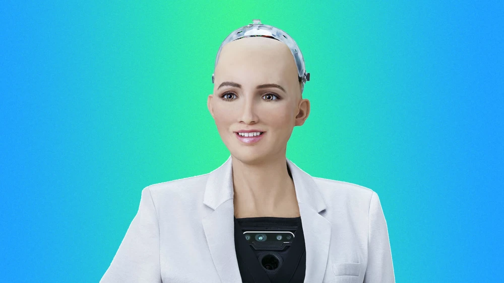

What is Robotics?
Robotics and Automation is the science of building and operating robots to perform tasks that typically require human intelligence and effort. This field combines multiple disciplines including engineering, computer science, and artificial intelligence to create machines capable of performing a variety of tasks. Robotics goes beyond humanoid robots to include a wide range of automated systems and devices.
Join Our Robotics Club!
Are you passionate about robotics and automation? Join our Robotics Club to collaborate on exciting projects, learn new skills, and connect with fellow enthusiasts. Whether you're a beginner or an experienced builder, our club offers a supportive environment to explore the world of robotics together. Sign up today and be part of the future of technology!
Join NowLog in to the ADMIN section.
Note:
The backend of this website sleeps after inactivity for 10mins since its a free plan. Waking up takes 1 - 10 minutes. For admin account, username is 'thecodecobra', password is MandreAjax@20A bit of History
The dream to create machines that are skilled and intelligent has been part of humanity from the beginning of time. The dream is now becoming part of our world's striking reality. The legend of the Titan Prometheus who moulded the giant Talus , the bronze slave forged by Hephaestus, testify to this quest in Greek mythology. Just as giant Talus was entrusted to protect the island of Crete the industrial age, a mechanical creature is entrusted with the task of substituting a human being in labor duties. This concept was introduced by the Czech playwright Karel Capek in 1921 in his play Rassum’s Universal Robots. Where he coined the word robot from robota which means forced laborer. While the concept was born in friction, the practical definition of robots varies whereby according to Karel Capek, a robot was a machine similar to a human being, according to the Oxford English dictionary, it is a machine capable of carrying out a complex series of actions automatically, especially one programmable by computer . Also the International Organisation of standardisation describes it as an automatically controlled programmable in 3 or more axes either fixed or mobile for use in industrial automation. In addition, the robot institute of america defines it as reprogrammable multifunctional manipulator designed to move materials, tools, and specialized devices through variable programmable motions for performance of a variety of tasks
Applications Of Robotics and Automation
- Automation and Robotics in construction - Building and construction is one of the major industries around the world. Applications and the activities of robotics and automation in this industry started in the early 90s aiming to optimize equipment operations, improve safety, enhance perception of workspace and ensure a quality environment for building occupants.
- Agricultural industries- Automation and robotics are applied in the various stages of the agriculture industries like irrigation of horticulture land, parks, gardens and golf courses efficiently and reducing the wastage of water . Food safety by the selection of appropriate chemicals. Smart farming also helps to maintain the humidity, temperature and irrigation process by using the sensors and apps.
- Quantitative risk assessment in financial institutions- The integration of robotic process automation in quantitative risk assessment signifies a substantial advancement in financial risk management . Traditional approaches frequently had difficulty in handling the vast volume and complexibility of financial data which can lead to inefficiencies and potential inaccuracies in risk assessment modelling. The introduction of RPA can address these issues, offering a more effective and precise method for managing financial risks .
- Maintenance and repair- Maintenance is the process that preserves or restores a desired state of a system or facility. It involves three major activities: Inspection, planned maintenance and disturbance handling.
What are the Advantages?
- Increased Productivity: Robots can work 24/7 without breaks, boosting output. They perform repetitive tasks faster and more consistently than humans.
- Improved Accuracy & Quality Automation reduces human error. Robots deliver high precision, especially in manufacturing, surgery, and electronics.
- Enhanced Safety Dangerous tasks (e.g., handling chemicals, heavy lifting, welding) can be done by robots. Reduces workplace accidents and injuries.
- Cost Savings (Long-term): Although initial cost is high, automation reduces labor, waste, and rework. Leads to lower operational costs over time.
What Our Friends Say About Robotics and Automation
Wamala Jotham
"Robotics is relevant to society because it's becoming essential for automation, safety, efficiency, and the futuer of work."
Kanjesigye Jolly
"The aid in precision of technical works that the human hand falls short of."
Peace Wafana
"Robotics can do work that is beyond human capability without getting tired."
Humanoid Robots
Humanoid robots are advanced machines designed to resemble and mimic human movement and behavior. They can walk, speak, and interact in natural ways, making them ideal for assisting in healthcare, education, customer service, and research. Their human-like form allows them to operate tools, navigate environments, and collaborate safely with people.